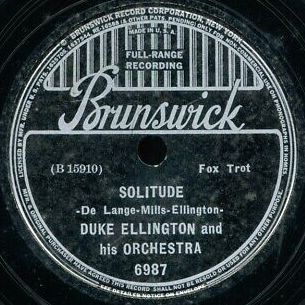

vinyl-834832
MFG.D 2024'12
[Generation]:1920s-30s
⬊⬊⬊⬊


info
Duke Ellington
1934
 領取你的專屬磁片
領取你的專屬磁片
Duke Ellington（原名Edward Kennedy
Ellington），是美國最有影響力的爵士樂音樂家之一。他是一位才華洋溢的作曲家、鋼琴家和樂隊指揮，被尊稱為「爵士樂公爵」。
他的音樂融合了爵士、布魯斯、搖擺樂和古典音樂，讓爵士樂的表現形式更豐富。最初在1920年代開始嶄露頭角，帶領他的樂團在紐約的科頓俱樂部表演，創作了像《It
Don’t Mean a Thing (If It Ain’t Got That Swing)》、《Take the "A"
Train》、《Mood Indigo》和《Sophisticated Lady》這樣的經典作品。